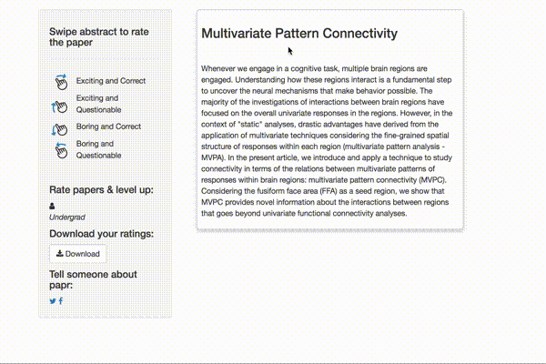
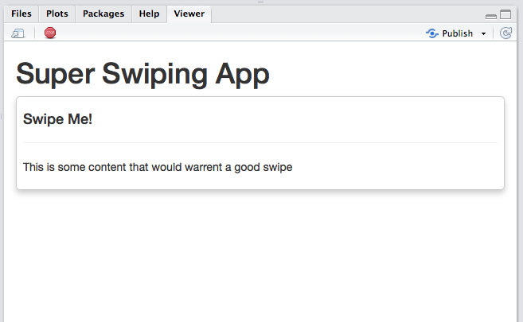
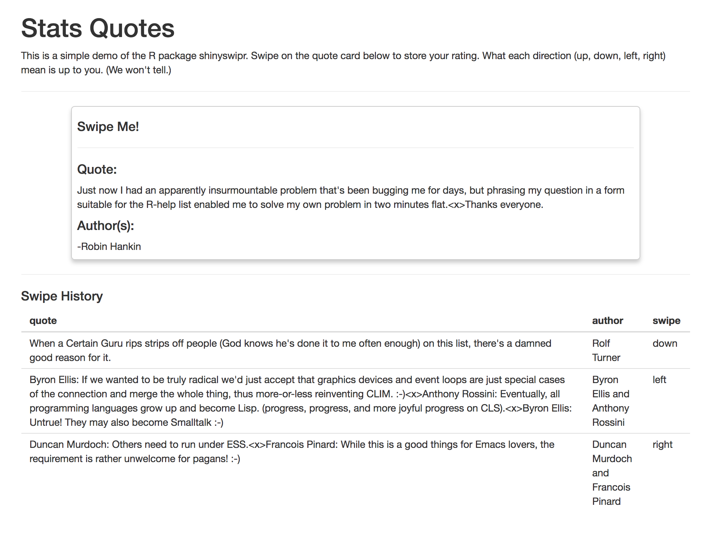

devtools::install_github("nstrayer/shinyswipr")One day Lucy was sitting around on twitter when she spotted this tweet:
I built a "tinder for academic preprints" web app: https://t.co/fZYlgkn4WL for @biorxivpreprint preprints.
— Jeff Leek (@jtleek) October 3, 2016
A tinder for preprints needs swiping though…
Hilarious 😂 If only it was compatible with swiping..the tactile enjoyment of making snap judgments by swiping left/right is unrivaled #papr https://t.co/isg5hmsh7n
— Lucy (@LucyStats) October 3, 2016
Soon she remembered that I know a bit of javascript…
@geospacedman @jtleek @jcheng I'm looping you in @NicholasStrayer can you do some javascript magic to make this happen ✨💻
— Lucy (@LucyStats) October 3, 2016
As we can’t pass up an opportunity to get distracted from coursework we immediately set about trying to implement swiping in papr.
We were dismayed to find that no one had already designed a swipe-based input for Shiny. Surely this must be one of the most important and needed additions to the statistical app making world?!
Never deterred, after a few hours of hacking we had it working, but it was not pretty. The code was extremely hacky, with javascript injected haphazardly here and there and elements hidden so shiny could see the changes. Since then we steadily made improvements to it, streamlining the code until it worked consistently, and more importantly, looked good.

Now we are ready to share our super secret swiping technology with the world. shinyswipr is an R package that allows you to easily put a swipe-based interface into any of your Shiny apps. Here’s how you can start swiping immediately.
How To
Install:
The package is hot off the presses and thus not yet on CRAN. Therefor you have to install via github.
Just two functions included in shinyswipr: shinyswiprUI() and shinyswipr(). These two must be used in conjunction with each other in both the ui and server of your Shiny app respectively.
ui function:
shinyswiprUI is made to be very flexible. Essentially it is just a wrapper for any other UI element you can think of. It takes the elements and presents them on a card that the user can then swipe.
Here we will create a simple static card for swiping.
library(shinyswipr)
u <- fixedPage(
shinyswiprUI( "my_swiper",
h4("Swipe Me!"),
hr(),
p("This is some content that would warrent a good swipe")
)
)server function:
The server function is thankfully rather boring. It simply spits out a reactive variable that returns the swipe result. You can then do whatever you want with this variable. It is important to note that you never actually call the function shinyswipr() directly but pass it to the Shiny function callModule. This is so behind the scenes Shiny can handle the namespace of the functions to avoid conflicts in case there are more than one cards on the screen.
We will continue our simple app by writing a server function that takes the result of our swipe and prints it to the R console.
server <- function(input, output, session) {
card_swipe <- callModule(shinyswipr, "my_swiper")
observeEvent( card_swipe(),{
print(card_swipe) #show last swipe result.
})
}
# wrap it all together.
shinyApp(ui, server)That’s it. No fancy options, just simple good old fashion Shiny interface functions. This is what the above code produces:

Taking it farther
A simple static swiping tool like that is great, but most of the time you want the content of your card to be dynamic. Luckily this is as easy with shinyswipr as it is with any other UI element in Shiny. Simple pass in whatever reactive elements you want to the shinyswiprUI function and they will be rendered within the card and updated at your will.
Let’s demo this with a simple app. QuotR (trademark/patent pending) is an app that lets you view statistician quotes from the wonderful fortunes package and rate them at your own discretion.
Click here to see a working demo. If you don’t feel like it, that’s fine. Here’s a screenshot of it.

In this app we use the output of the swipe function to store the results and also update the contents of the card/show past swipes. The UI code to make this app is:
ui <- fixedPage(
h1("Stats Quotes"),
p("This is a simple demo of the R package shinyswipr. Swipe on the quote card below to store your rating. What each direction (up, down, left, right) mean is up to you. (We won't tell.)"),
hr(),
shinyswiprUI( "quote_swiper",
h4("Swipe Me!"),
hr(),
h4("Quote:"),
textOutput("quote"),
h4("Author(s):"),
textOutput("quote_author")
),
hr(),
h4("Swipe History"),
tableOutput("resultsTable")
)All we had to do was pass our desired UI functions in and shinyswipr handles the rest. These functions can then be updated by the server functions just as they would in any other situation. Easy, huh?
What do we do with this?
As silly of an interface tool as swiping is (with its connotations to a dating app), it truly is a much more mobile friendly interface tool than a button. What applications can you think of for swiping? Perhaps a Shiny app could used by a doctor to quickly parse through relevant patient data while walking through the ED, or a field ecologist can easily log data while in the field. Any way as statisticians and data scientists that we can make our products more inviting the better.
It would be fantastic if you could try out shinyswipr. I want people to use it for things I didn’t design it for, break it, submit bug reports on the github page, request new features, etc.
Appendix
Here is the full code for the quotes app from above.
library(shinyswipr)
library(shiny)
library(fortunes)
ui <- fixedPage(
h1("Stats Quotes"),
p("This is a simple demo of the R package shinyswipr. Swipe on the quote card below to store your rating. What each direction (up, down, left, right) mean is up to you. (We won't tell.)"),
hr(),
shinyswiprUI( "quote_swiper",
h4("Swipe Me!"),
hr(),
h4("Quote:"),
textOutput("quote"),
h4("Author(s):"),
textOutput("quote_author")
),
hr(),
h4("Swipe History"),
tableOutput("resultsTable")
)
server <- function(input, output, session) {
card_swipe <- callModule(shinyswipr, "quote_swiper")
appVals <- reactiveValues(
quote = fortune(),
swipes = data.frame(quote = character(), author = character(), swipe = character())
)
our_quote <- isolate(appVals$quote)
output$quote <- renderText({ our_quote$quote })
output$quote_author <- renderText({ paste0("-",our_quote$author) })
output$resultsTable <- renderDataTable({appVals$swipes})
observeEvent( card_swipe(),{
#Record our last swipe results.
appVals$swipes <- rbind(
data.frame(quote = appVals$quote$quote,
author = appVals$quote$author,
swipe = card_swipe()
), appVals$swipes
)
#send results to the output.
output$resultsTable <- renderTable({appVals$swipes})
#update the quote
appVals$quote <- fortune()
#send update to the ui.
output$quote <- renderText({ appVals$quote$quote })
output$quote_author <- renderText({ paste0("-",appVals$quote$author) })
}) #close event observe.
}
shinyApp(ui, server)That is a lot of code, but to it is a full app.